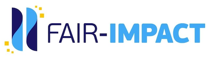
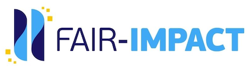

IDCC24 W6 - FAIR-by-Design: introducing Skills4EOSC and FAIR-IMPACT
Workshop
Date/Time: Mon, 19 Feb 2024 13:00 - 16:00 GMT
Location:
Surgeons Quarter 10 Hill Place Edinburgh EH8 9DS United Kingdom
Training Description
The main goal of the workshop is to introduce participants to the projects’ resources and show how they can be used to help create a broad range of FAIR by design outputs. We expect this workshop to be of high practical use to participants when it comes to increasing their capacity for supporting the production and reuse of FAIR digital objects. Therefore, it is aimed at any interested stakeholder who would like to become more aware with regards to the FAIR principles in their daily activities by both improving the FAIRness of existing digital objects or employing a FAIR-by-Design approach when developing new digital objects.
Target audience: Research software developers, training materials designers
Expertise Level / Skill Level: Beginner
Primary Language: English
Access Cost: Y (to follow the workshop in person one must register and pay the conference attendance fee)
Prerequisites: none
Duration: 3.5 hrs
Training objectives
- describe research software using metadata
- describe training materials using metadata
- assess the FAIRness of software objects
- follow guidelines for FAIR research software
Keywords
FAIR-by-design, FAIR software, FAIRness, metadata, methodology
Agenda:
| Time | Topic |
|---|---|
| 13:00 - 13:10 | Introduction |
| 13:10 - 13.30 | FAIR-IMPACT Metadata fo research software |
| 13:30 - 13:50 | FAIR-IMPACT FAIR Research Software Metrics |
| 13:50 - 14:30 | Skills4EOSC FAIR-by-Design Methodology |
| 14:30 - 14:50 | coffee break |
| 14:50 - 15:50 | Put it all into practice and measure the FAIRness of your effort |
| 15:50 - 16:25 | Retrospective: how did it go? - interactive Q&A |
| 16:25 - 16:30 | Discussion and Conclusions |
Resources and Materials
Official event page: https://www.eventbrite.co.uk/e/idcc24-w6-fair-by-design-introducing-skills4eosc-and-fair-impact-tickets-792998538977 All resource and materials can be found at https://github.com/FAIR-by-Design-Methodology/IDCC24workshop
Author(s)
Sonja Filiposka, Dominique Green, Joy Davidson, Neil Chue Song, Morane Gruenpeter, Mario Antonioletti
Trainer(s)
Sonja Filiposka , Dominique Green, Joy Davidson, Neil Chue Song, Morane Gruenpeter, Mario Antonioletti
, Dominique Green, Joy Davidson, Neil Chue Song, Morane Gruenpeter, Mario Antonioletti
Contact information
sonja.filiposka@finki.ukim.mk
License

This work is licensed under a Creative Commons Attribution 4.0 International License.
DOI
https://doi.org/10.5072/zenodo.1234567
Accessibility Mission
Skills4EOSC is dedicated to ensuring that all produced learning materials are accessible to as many visitors as possible regardless of their ability or technology. We have an active commitment to increasing our learning materials accessibility. The main standards that we aim to comply with are WCAG v.2.1 Level AA criteria and PDF/UA (ISO 14289).
Acknowledgement
These learning materials have been developed by following the FAIR-by-Design Methodology.
 
